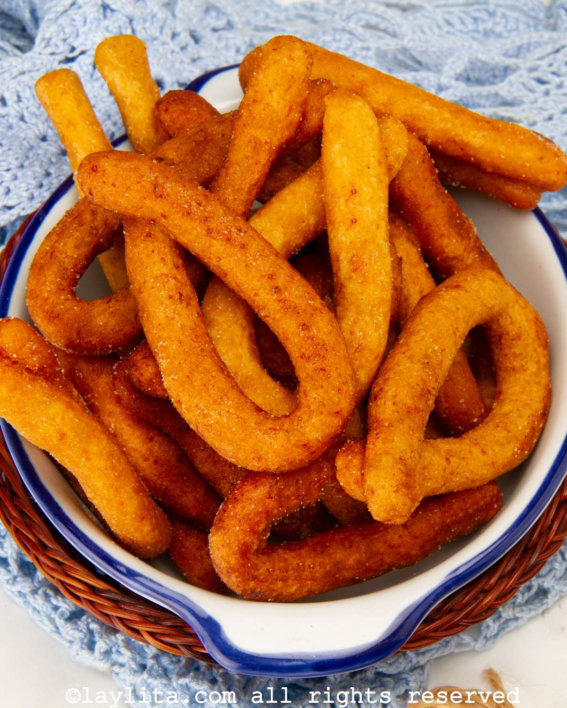

Como hacer Mandocas

Ingredientes:
- 2 plátanos maduros
- 1 taza de harina de maíz
- 1/4 taza de azúcar
- 1/4 taza de queso rallado
- 1/4 taza de leche
- Aceite para freír
Instrucciones:
- Pela los plátanos y córtalos en trozos.
- Mezcla la harina de maíz, el azúcar, el queso rallado y la leche en un tazón.
- Agrega los trozos de plátano a la mezcla y mezcla bien.
- Calienta el aceite en una sartén a fuego medio.
- Forma bolitas con la mezcla y fríelas hasta que estén doradas.
Inicio